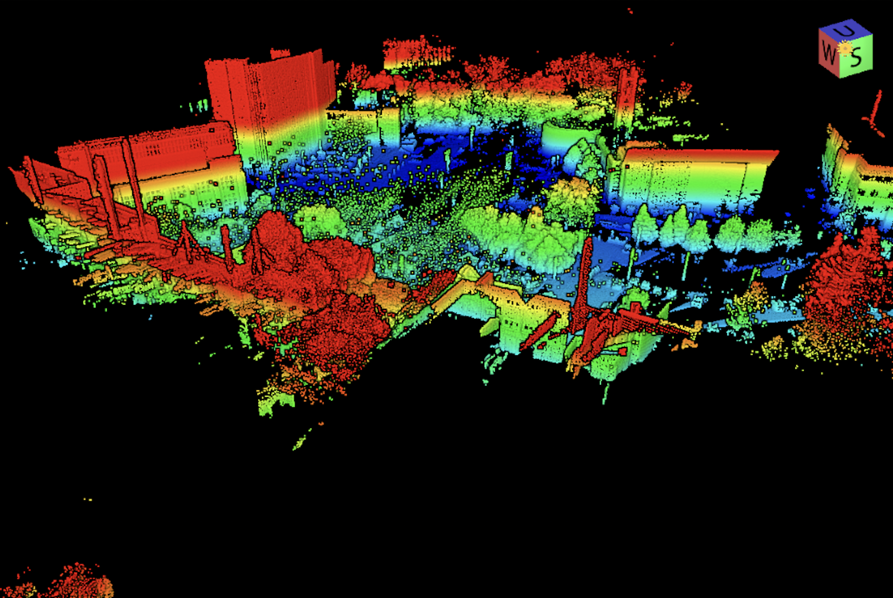

My name is Reid Perkins, a first year PhD student at Western University. Welcome to my website. It is not the year 1998.

LiDAR point cloud of (part of) the Western University campus, taken October 26th, 2021. This data was collected by Drs. Catherine Neish and Gavin Tolometti, as well as myself.